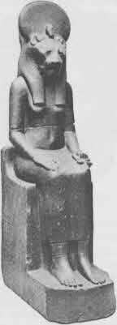

Genellikle bütün engeller ve devler aşıldığında gelen en son macera, başarılı kahraman ruhun Dünyanın Kraliçe Tanrıçasıyla mistik evliliği (ιεροζ γαμζ [hieros gamos]) olarak sunulmuştur. Bu en alt noktadaki, zirvedeki ya da dünyanın en ucundaki, kozmosun orta noktasındaki, tapınağın sunak yerindeki ya da kalbin en derin noktasının karanlığındaki krizdir.
İrlanda’nın batısında hâlâ Issız Adanın Prensi ile Tubber Tintye Hanımı’nın öyküsünü anlatırlar. Erin Kraliçesi’ni iyileştirmeyi uman kahraman genç, alevli peri kuyusu Tubber Tintye’nin suyundan üç şişe almaya gönüllü olmuştu. Yolda karşılaştığı doğaüstü bir teyzenin önerisini dinleyerek ve onun verdiği harika, bir parça kirli, zayıf, tüyleri salkım saçak bir ata binerek ateşten bir nehri geçti ve zehirli ağaçlar korusunun dokunuşundan kurtuldu. Rüzgâr hızındaki at Tubber Tintye kalesinin dibinde durdu ve prens onun üzerinden açık bir pencereye sıçrayarak kazasız belasız içeriye girdi.
“İçerisi olağanüstü büyüktü ve uyuyan devlerle ve deniz ve yerin binbir canavarıyla, büyük balinalar, uzun kaygan yılanbalıkları, ayılar ve her tür ve biçimden yaratıklarla doluydu. Prens aralarından geçip büyük bir merdivene vardı. Merdivenin sonunda, içinde bir yatağa uzanmış, o güne dek gördüğü en güzel kadının uyuduğu bir odaya ulaştı. ‘Sana söyleyeceğim bir şey yok,’ diye düşündü ve bir sonraki odaya geçti; böylece on iki odaya da baktı. Her birinde bir öncekinden daha da güzel bir kadın yatıyordu. Fakat on üçüncü odaya varıp kapıyı açtığında, altın parıltısı gözlerini kamaştırdı. Gözü alışıncaya dek durdu, sonra içeri girdi. Büyük ışıltılı odada altından tekerlekler üzerinde duran altın bir yatak vardı. Tekerlekler durmaksızın dönüyor, yatak gece gündüz ara vermeksizin daireler çiziyordu. Yatakta Tubber Tintye Kraliçesi yatıyordu ve on iki hizmetçisi güzeldiyse bile, onun yanında güzelliklerinin esamesi dahi okunmazdı. Yatağın ucunda Tubber Tintye’nin, ateş kuyusunun kendisi vardı. Kuyunun üzerinde altın bir kapak vardı ve Kraliçenin yatağıyla birlikte o da dönüyordu.
“ ‘Diyorum ki,’ dedi prens, ‘burada biraz dinleneceğim.’ Sonra yatağa girdi ve altı gece ve gündüz yataktan çıkmadı.”{150}
Uyku Evinin Hanımı, peri masalı ve mitte tanıdık bir figürdür.
Ondan daha önce, Brynhild ve küçük Çalıgülü biçimleri altında bahsettik.{151} O en mükemmel güzelliklerin en mükemmelidir, bütün arzulara yanıttır, bütün kahramanların dünyevi ve dünyadışı maceralarının göz alıcı hedefidir. Anne, kız kardeş, sevgili, gelindir. Dünyada büyüleyici ne varsa, sevinç vermeyi vaat eden ne varsa, dünyanın şehirlerinde, ormanlarında değilse uykunun derinliklerinde onun varlığının habercisi olmuştur. Çünkü o, kusursuzluk vaadinin bedenlenmiş halidir; ruhun, kurulu yetersizlikler dünyasındaki sürgününün sonunda, bir zamanlar tattığı saadeti yeniden tadacağının güvencesidir: çok uzak bir geçmişte tanıdığımız, hatta sevdiğimiz rahatlatıcı, besleyici, -genç ve güzel— “iyi" anne. Zaman onu uzağa götürmüştü, fakat o hâlâ zamandışı denizin dibinde zamandışılıkta uyuyan biri gibi yaşıyor.
Ne var ki, hatırlanan imge yalnızca iyi kalpli değildir; çünkü “kötü” anne de -(1) saldırgan fantezilerin yöneltildiği ve karşı saldırısından ürkülen, burada olmayan, ulaşılamaz anne; (2) engelleyici, yasaklayıcı, cezalandıran anne; (3) uzaklaşmaya çalışan büyüyen çocuğu kendinde tutan anne; ve son olarak (4) varlığı tehlikeli arzu için bir tuzak olan (kastrasyon kompleksi), arzulanan fakat yasak olan anne (Oidipus kompleksi)- yetişkinin çocukluk anılarının gizli toprağında varlığını sürdürür ve bazen daha güçlü olandır. Genç sporcu Aktaion’u tamamen yıkarak, aklın ve bedenin engellenmiş arzusunun bu türden simgelerinde nasıl bir korku patlaması içerildiğini gösteren, iffetli ve korkunç Diana{152} gibi ulaşılmaz büyük tanrıça figürlerinin kökeninde o vardır.
Aktaion tehlikeli tanrıçaya öğle vakti rastlamıştı; güneşin genç, güçlü çıkışını kesip dengeye ulaştığı ve ölüme doğru görkemli inişine başladığı o kader dolu an. Arkadaşlarını, bir koşu oyununun ardından, kanlı köpekleriyle dinlenir halde bırakmış ve alışılmış avlanmasının yerine, amaçsızca komşu ağaçlıkları araştırmaya girişmişti. Serviler ve çamlarla kaplı bir vadiye geldi. Merakla ilerledi. İçi tatlı, şırıltılı bir kaynak ve çimenli bir havuza ulaşan bir nehirle ıslanan bir mağara vardı. Bu gölgeli köşe Diana’nın yeriydi ve o sırada o nypmhalarıyla birlikte tamamen çıplak bir halde yıkanıyordu. Mızrağını, kalkanını, yayını, terlikleri ve elbisesiyle birlikte bir kenara koymuştu. Ve çıplak nymphalardan biri uzun saçlarını örmüştü; diğerleri büyük testilerden su döküyordu.
Genç, avare delikanlı bu hoş yere dalınca, bir dizi korku çığlığı yükseldi ve bütün bedenler hanımlarını dünyevi gözlerden korumaya çalışarak sarmaladılar. Fakat başı ve omuzları ortadaydı. Genç görmüştü, hâlâ da görüyordu. Diana yayı için bakındı, ama uzaktaydı, o yüzden eline gelen ilk şeyi, yani suyu aldı ve onu Aktaion’un yüzüne fırlattı. “Şimdi tanrıçayı çıplak gördüğünü,” diye bağırdı öfkeyle, “anlat bakalım, anlatabilirsen.”
Başında çatal çatal boynuzlar yükseldi. Boynu kalınlaştı ve uzadı, kulakları sivrildi. Kolları bacaklara ve elleriyle ayakları toynaklara dönüştü. Korkuya kapılarak koştu, böylesine hızla hareket edebildiğine şaşarak. Fakat soluklanmak ve bir şey içmek için durup da kendini suyun yüzünde görünce korkuyla geri çekildi.
Aktaion’un başına o zaman korkunç şeyler geldi. Kendi tazıları büyük bir geyiğin kokusunu alarak ağaçlığa daldı. Onları duyunca bir an neşeyle duraksadı, ama sonra içgüdüsel korkuya kapıldı ve kaçtı. Tazılar arayı kapatarak izledi. Yanına geldiklerinde, ilki göğsüne atlarken adlarını bağırmayı denedi, fakat boğazındaki ses insan sesi değildi. Onu pençeleriyle paraladılar. Devrildi ve kendi av arkadaşları köpekleri kışkırtarak, coup de grace [öldürücü darbe, çn.] için geldiler. Kaçıştan ve ölümden haberi olan Diana, artık sakinleşmiş olarak dinlenebilirdi.{153}

Levha V. Tanrıça Sekhmet (Mısır).